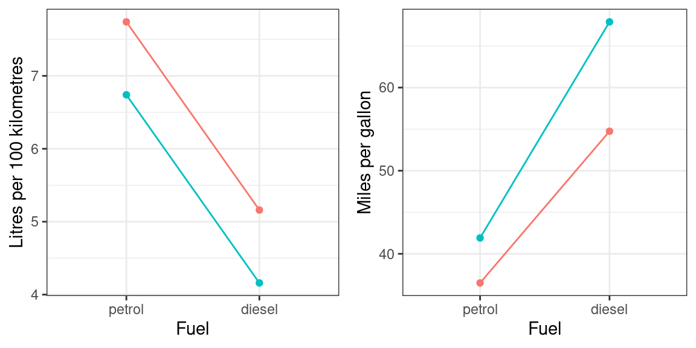
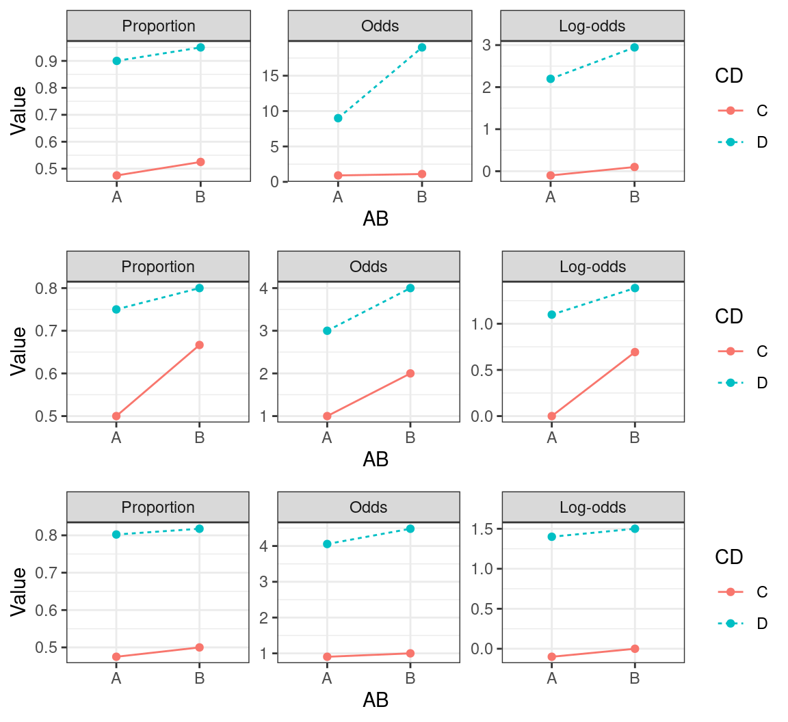
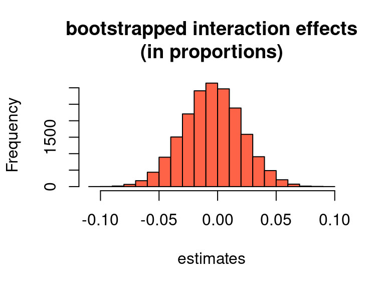
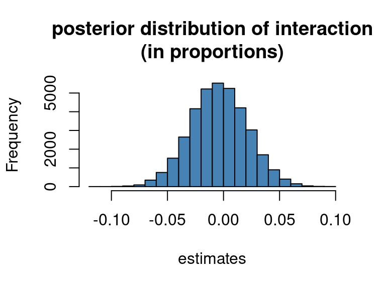

Interactions in logistic regression models
R
logistic regression
tutorial
bootstrapping
Bayesian statistics
brms
When you want to know if the difference between two conditions is larger in one group than in another, you’re interested in the interaction between ‘condition’ and ‘group’. Fitting interactions statistically is one thing, and I will assume in the following that you know how to do this. Interpreting statistical interactions, however, is another pair of shoes. In this post, I discuss why this is the case and how it pertains to interactions fitted in logistic regression models.
The problem: Nonlinear mappings
The crux of the problem was discussed from a psychologist’s perspective by Loftus (1978; see also Wagenmakers et al. 2012): Even if you find a statistical interaction between ‘condition’ and ‘group’, this doesn’t necessarily mean that one group is more sensitive to the difference in conditions than the other group. By the same token, even if you don’t find a statistical interaction between ‘condition’ and ‘group’, this doesn’t necessarily suggest that both groups are equally sensitive to the difference in conditions. The reason for this ambiguity is that the measured outcome variable (e.g., test score, reaction time, etc.) need not map linearly onto the latent variable of interest (e.g., proficiency, effort, etc.). For example, a 3-point increase on an arbitrary scale from one condition to another may correspond to a greater gain in actual proficiency on the higher end of the scale than on the lower end. If one group progresses from 7 to 10 points and the other from 15 to 18 points, then, the statistical analysis won’t reveal an interaction between ‘condition’ and ‘group’ in terms of the measured outcome variable, even though there is a greater gain in proficiency for the latter group than for the former. By the same token, a 4-point increase for the first group may correspond to a 3-point increase for the second group in terms of proficiency gained. If this doesn’t make much sense to you, I suggest you read the first seven pages of Wagenmakers et al. (2012).
Unfortunately, the problem with interpreting interactions doesn’t vanish if you don’t want to infer latent psychological variables and you stick strictly to observable quantities. For instance, if you want to compare the efficiency of two car makes (red vs. blue) depending on fuel type (petrol vs. diesel), you may not find an interaction between car make and fuel type when you express fuel efficiency in litres per 100 kilometres: There may be, say, a one-litre difference between both fuel types for both car makes (Figure 1, left). But if you express fuel consumption in miles per gallon (or kilometres per litre), you’d observe that the difference in distance travelled per amount of fuel consumed between diesel and petrol is larger for one car make than for the other (Figure 1, right). The reason is that, while both measures (litres/100 km and miles/gallon) are perfectly reasonable and use exactly the same information (distance travelled and fuel burnt), the mapping between them is nonlinear.
Log-odds, odds, and proportions
You encounter the same problem when you fit interactions in a logistic model. The coefficients in logistic models are estimated on the log-odds scale, but such models are more easily interpreted when the coefficients or its predictions are converted to odds (by exponentiating the log-odds) or to proportions (by applying the logistic function to predictions obtained in log-odds). Both the exponential and the logistic function are nonlinear, so that you end up with the same problem as above: Whether or not you observe an interaction may depend on how you express the outcome variable.
(Sidebar: A proportion of 0.80 corresponds to odds of 0.80/(1-0.80) = 4 against 1. By taking the natural logarithm of the odds, you end up with the log-odds of ln(0.80) = 1.39. To arrive back at the odds, exponentiate: exp(1.39) = 4. To arrive back at the proportion, apply the logistic function: 1/(1+exp(-1.39)) = 0.80. All these functions are nonlinear.)
Figure 2 illustrates that a non-crossover interaction if the results are expressed in, say, log-odds needn’t remain an interaction if you express the results in another way.

What’s the practical upshot of all this? First, before you interpret a non-crossover interaction, read Wagenmakers et al. (2012). Second, if you’re working with binary data and you predict a non-crossover interaction in a logistic model, be aware that a significant interaction in terms of the log-odds output by your model needn’t correspond to an interaction in terms of proportions, and vice versa.
How to check for interactions in terms of proportions
At this point, you may be wondering how you can check whether a significant interaction in terms of log-odds in your own model corresponds to a significant interaction in terms of proportions, too. (If you aren’t, check out this random Garfield comic instead.) In the following, I show two ways how you can do this: using parametric bootstrapping and by going Bayesian.
We’ll work with a simple made-up dataset. The question is whether variables AB and CD interact with respect to the outcome variable Successes. For each combination of predictor variables, 1000 cases were observed, among which variable numbers of Successes:
# Create a dataset
df <- expand.grid(
AB = c("A", "B"),
CD = c("C", "D")
)
df$Total <- 1000
df$Successes <- c(473, 524, 898, 945)
df AB CD Total Successes
1 A C 1000 473
2 B C 1000 524
3 A D 1000 898
4 B D 1000 945Using parametric bootstrapping
First, fit the logistic regression model. Unsurprisingly (since this is a made-up dataset), the interaction effect is significant when expressed in log-odds (0.46, 95% confidence interval: [0.08, 0.85], z = 2.38, p = 0.017):
# Fit a logistic regression model
m <- glm(cbind(Successes, Total - Successes) ~ AB*CD, data = df, family = "binomial")
summary(m)$coefficients Estimate Std. Error z value Pr(>|z|)
(Intercept) -0.108 0.0633 -1.71 8.79e-02
ABB 0.204 0.0896 2.28 2.26e-02
CDD 2.283 0.1222 18.69 6.29e-78
ABB:CDD 0.464 0.1954 2.38 1.74e-02confint(m)Waiting for profiling to be done... 2.5 % 97.5 %
(Intercept) -0.2324 0.0159
ABB 0.0287 0.3799
CDD 2.0478 2.5271
ABB:CDD 0.0849 0.8519When expressed in proportions, however, the difference between C and D in condition A is pretty much as large as the difference between C and D in condition B. For this example, we could just as well compute this directly from dataset df, but a more general method is to ask the model to predict the proportions and then compute the differences between them:
# Predicted proportions in condition A
predict(m, type = "response", newdata = data.frame(AB = "A", CD = "C")) 1
0.473 predict(m, type = "response", newdata = data.frame(AB = "A", CD = "D")) 1
0.898 # difference:
0.898 - 0.473[1] 0.425# Predicted proportions in condition B
predict(m, type = "response", newdata = data.frame(AB = "B", CD = "C")) 1
0.524 predict(m, type = "response", newdata = data.frame(AB = "B", CD = "D")) 1
0.945 # difference:
0.945 - 0.524[1] 0.421# difference between differences:
0.425 - 0.421[1] 0.0040.004 is the estimated interaction effect when expressed on the proportion scale. Now we need to express our uncertainty about this number. Here I do this by means of a parametric bootstrap. If you’ve never heard of bootstrapping, you can read my blog post Some illustrations of bootstrapping. In a nutshell, we’re going to use the model to simulate new datasets, refit the model on those simulate datasets, and calculate the interaction effect according to these refitted models in the same way as we did above. This will yield a large number of estimated interaction effects (some larger than 0.004, others smaller) on the basis of which we can estimate how large our estimation error could be:
# The following code implements a parametric bootstrap
# with 'bs_runs' runs.
bs_runs <- 20000
# Preallocate matrix to contain predicted proportions per cell
bs_proportions <- matrix(ncol = 4, nrow = bs_runs)
# Simulate new data from model, refit model, and
# obtain predicted proportions a large number of times
for (i in 1:bs_runs) {
# Simulate a new outcome from the model
bs_outcome <- simulate(m)$sim_1
# Refit model on simulated outcome
bs_m <- glm(bs_outcome ~ AB*CD, data = df, family = "binomial")
# Predicted proportion ("response") for each cell according to model bs_m
bs_proportions[i, 1] <- predict(bs_m, type = "response",
newdata = data.frame(AB = "A", CD = "C"))
bs_proportions[i, 2] <- predict(bs_m, type = "response",
newdata = data.frame(AB = "A", CD = "D"))
bs_proportions[i, 3] <- predict(bs_m, type = "response",
newdata = data.frame(AB = "B", CD = "C"))
bs_proportions[i, 4] <- predict(bs_m, type = "response",
newdata = data.frame(AB = "B", CD = "D"))
}
# Take the difference between D and C for condition A
bs_differences_A <- bs_proportions[, 2] - bs_proportions[, 1]
# Take the difference between D and C for condition B
bs_differences_B <- bs_proportions[, 4] - bs_proportions[, 3]
# Take the difference between these differences
bs_differences_diff <- bs_differences_B - bs_differences_A
# Plot
hist(bs_differences_diff, col = "tomato",
main = "bootstrapped interaction effects\n(in proportions)",
xlab = "estimates")
The confidence interval about the number 0.004 can be obtained as follows:
# 95% confidence interval using the percentile approach
quantile(bs_differences_diff, probs = c(0.025, 0.975)) 2.5% 97.5%
-0.054 0.046 So while the interaction effect is significant when expressed in log-odds, its uncertainty interval nicely straddles 0 when expressed in proportions. (Obviously, the example was contrived to yield this result.)
Going the Bayesian route
Alternatively, you can fit the data in a Bayesian model. I’ve used the brm() function from the brms package in a previous blog post, but its syntax should be fairly transparent. The only real difference (in terms of syntax) between brm() and glm() is in how you specify the outcome variable in a binomial logistic model. In this model (a Bayesian binomial logistic model with uninformative priors), too, the interaction effect is ‘significant’ (not a Bayesian term) when expressed in log-odds (0.47, 95% credible interval: [0.08, 0.86]).
library(brms)
m.brm <- brm(Successes | trials(Total) ~ AB*CD, data = df,
family = "binomial",
cores = 4,
# large number of iter(ations) to reduce
# effect of randomness on inferences
iter = 10000, warmup = 1000,
# suppress messages
silent = 2, refresh = 0)
summary(m.brm) Family: binomial
Links: mu = logit
Formula: Successes | trials(Total) ~ AB * CD
Data: df (Number of observations: 4)
Draws: 4 chains, each with iter = 10000; warmup = 1000; thin = 1;
total post-warmup draws = 36000
Population-Level Effects:
Estimate Est.Error l-95% CI u-95% CI Rhat Bulk_ESS Tail_ESS
Intercept -0.11 0.06 -0.23 0.01 1.00 24798 28727
ABB 0.20 0.09 0.03 0.38 1.00 21190 23420
CDD 2.29 0.12 2.05 2.53 1.00 19101 22207
ABB:CDD 0.47 0.20 0.09 0.86 1.00 18793 21908
Draws were sampled using sampling(NUTS). For each parameter, Bulk_ESS
and Tail_ESS are effective sample size measures, and Rhat is the potential
scale reduction factor on split chains (at convergence, Rhat = 1).Bayesian models generate not just estimates but entire distributions of estimates (the ‘posterior distribution’). We can use these to to output distributions of predicted proportions and of the differences between them:
# Draw predictions from posterior distribution (in log-odds):
brm_predictions <- posterior_linpred(m.brm,
newdata = expand.grid(
AB = c("A", "B"),
CD = c("C", "D"),
Total = 1000
)
)
# Instead of using newdata = expand.grid(...),
# you could also generate the 4 distributions
# one at a time, e.g.:
# brm_predictions_AC <- posterior_linpred(m.brm,
# newdata = data.frame(
# AB = "A",
# CD = "C",
# Total = 1000
# )
# )
# Convert predictions in log-odds to predictions in proportions:
brm_proportions <- plogis(brm_predictions)
# Take the difference between D and C for condition A
brm_difference_A <- brm_proportions[, 3] - brm_proportions[, 1]
# Take the difference between D and C for condition B
brm_difference_B <- brm_proportions[, 4] - brm_proportions[, 2]
# Take the difference between these differences
brm_difference_diff <- brm_difference_B - brm_difference_A
hist(brm_difference_diff, col = "steelblue",
main = "posterior distribution of interaction\n(in proportions)",
xlab = "estimates")
The credible interval about the number 0.004 can be obtained as follows:
# 95% credible interval
quantile(brm_difference_diff, probs = c(0.025, 0.975)) 2.5% 97.5%
-0.0533 0.0460 The parametric and the bootstrap approach thus yield essentially the same results in this case.
References
Loftus, Geffrey R. 1978. On interpretation of interactions. Memory & Cognition 6(3). 312-319.
Wagenmakers, Eric-Jan, Angelos-Miltiadis Krypotos, Amy H. Criss and Geoff Iverson. 2012. On the interpretation of removable interactions: A survey of the field 33 years after Loftus. Memory & Cognition 40(2). 145-160.
Software versions
Please note that I reran the code on this page on August 6, 2023.
devtools::session_info()─ Session info ───────────────────────────────────────────────────────────────
setting value
version R version 4.3.1 (2023-06-16)
os Ubuntu 22.04.2 LTS
system x86_64, linux-gnu
ui X11
language en_US
collate en_US.UTF-8
ctype en_US.UTF-8
tz Europe/Zurich
date 2023-08-06
pandoc 3.1.1 @ /usr/lib/rstudio/resources/app/bin/quarto/bin/tools/ (via rmarkdown)
─ Packages ───────────────────────────────────────────────────────────────────
package * version date (UTC) lib source
abind 1.4-5 2016-07-21 [1] CRAN (R 4.3.1)
backports 1.4.1 2021-12-13 [1] CRAN (R 4.3.0)
base64enc 0.1-3 2015-07-28 [1] CRAN (R 4.3.0)
bayesplot 1.10.0 2022-11-16 [1] CRAN (R 4.3.1)
bridgesampling 1.1-2 2021-04-16 [1] CRAN (R 4.3.1)
brms * 2.19.0 2023-03-14 [1] CRAN (R 4.3.1)
Brobdingnag 1.2-9 2022-10-19 [1] CRAN (R 4.3.1)
cachem 1.0.6 2021-08-19 [2] CRAN (R 4.2.0)
callr 3.7.3 2022-11-02 [1] CRAN (R 4.3.1)
checkmate 2.2.0 2023-04-27 [1] CRAN (R 4.3.1)
cli 3.6.1 2023-03-23 [1] CRAN (R 4.3.0)
coda 0.19-4 2020-09-30 [1] CRAN (R 4.3.1)
codetools 0.2-19 2023-02-01 [4] CRAN (R 4.2.2)
colorspace 2.1-0 2023-01-23 [1] CRAN (R 4.3.0)
colourpicker 1.2.0 2022-10-28 [1] CRAN (R 4.3.1)
crayon 1.5.2 2022-09-29 [1] CRAN (R 4.3.1)
crosstalk 1.2.0 2021-11-04 [1] CRAN (R 4.3.1)
curl 5.0.1 2023-06-07 [1] CRAN (R 4.3.1)
devtools 2.4.5 2022-10-11 [1] CRAN (R 4.3.1)
digest 0.6.29 2021-12-01 [2] CRAN (R 4.2.0)
distributional 0.3.2 2023-03-22 [1] CRAN (R 4.3.1)
dplyr * 1.1.2 2023-04-20 [1] CRAN (R 4.3.0)
DT 0.28 2023-05-18 [1] CRAN (R 4.3.1)
dygraphs 1.1.1.6 2018-07-11 [1] CRAN (R 4.3.1)
ellipsis 0.3.2 2021-04-29 [2] CRAN (R 4.2.0)
evaluate 0.15 2022-02-18 [2] CRAN (R 4.2.0)
fansi 1.0.4 2023-01-22 [1] CRAN (R 4.3.1)
farver 2.1.1 2022-07-06 [1] CRAN (R 4.3.0)
fastmap 1.1.0 2021-01-25 [2] CRAN (R 4.2.0)
forcats * 1.0.0 2023-01-29 [1] CRAN (R 4.3.0)
fs 1.5.2 2021-12-08 [2] CRAN (R 4.2.0)
generics 0.1.3 2022-07-05 [1] CRAN (R 4.3.0)
ggplot2 * 3.4.2 2023-04-03 [1] CRAN (R 4.3.0)
glue 1.6.2 2022-02-24 [2] CRAN (R 4.2.0)
gridExtra 2.3 2017-09-09 [1] CRAN (R 4.3.0)
gtable 0.3.3 2023-03-21 [1] CRAN (R 4.3.0)
gtools 3.9.4 2022-11-27 [1] CRAN (R 4.3.1)
hms 1.1.3 2023-03-21 [1] CRAN (R 4.3.0)
htmltools 0.5.5 2023-03-23 [1] CRAN (R 4.3.0)
htmlwidgets 1.6.2 2023-03-17 [1] CRAN (R 4.3.1)
httpuv 1.6.11 2023-05-11 [1] CRAN (R 4.3.1)
igraph 1.5.0.1 2023-07-23 [1] CRAN (R 4.3.1)
inline 0.3.19 2021-05-31 [1] CRAN (R 4.3.1)
jsonlite 1.8.7 2023-06-29 [1] CRAN (R 4.3.1)
knitr 1.39 2022-04-26 [2] CRAN (R 4.2.0)
later 1.3.1 2023-05-02 [1] CRAN (R 4.3.1)
lattice 0.21-8 2023-04-05 [4] CRAN (R 4.3.0)
lifecycle 1.0.3 2022-10-07 [1] CRAN (R 4.3.0)
loo 2.6.0 2023-03-31 [1] CRAN (R 4.3.1)
lubridate * 1.9.2 2023-02-10 [1] CRAN (R 4.3.0)
magrittr 2.0.3 2022-03-30 [1] CRAN (R 4.3.0)
markdown 1.7 2023-05-16 [1] CRAN (R 4.3.0)
MASS 7.3-60 2023-05-04 [4] CRAN (R 4.3.1)
Matrix 1.6-0 2023-07-08 [4] CRAN (R 4.3.1)
matrixStats 1.0.0 2023-06-02 [1] CRAN (R 4.3.1)
memoise 2.0.1 2021-11-26 [2] CRAN (R 4.2.0)
mime 0.10 2021-02-13 [2] CRAN (R 4.0.2)
miniUI 0.1.1.1 2018-05-18 [1] CRAN (R 4.3.1)
munsell 0.5.0 2018-06-12 [1] CRAN (R 4.3.0)
mvtnorm 1.2-2 2023-06-08 [1] CRAN (R 4.3.1)
nlme 3.1-162 2023-01-31 [4] CRAN (R 4.2.2)
pillar 1.9.0 2023-03-22 [1] CRAN (R 4.3.0)
pkgbuild 1.4.2 2023-06-26 [1] CRAN (R 4.3.1)
pkgconfig 2.0.3 2019-09-22 [2] CRAN (R 4.2.0)
pkgload 1.3.2.1 2023-07-08 [1] CRAN (R 4.3.1)
plyr 1.8.8 2022-11-11 [1] CRAN (R 4.3.1)
posterior 1.4.1 2023-03-14 [1] CRAN (R 4.3.1)
prettyunits 1.1.1 2020-01-24 [2] CRAN (R 4.2.0)
processx 3.8.2 2023-06-30 [1] CRAN (R 4.3.1)
profvis 0.3.8 2023-05-02 [1] CRAN (R 4.3.1)
promises 1.2.0.1 2021-02-11 [1] CRAN (R 4.3.1)
ps 1.7.5 2023-04-18 [1] CRAN (R 4.3.1)
purrr * 1.0.1 2023-01-10 [1] CRAN (R 4.3.0)
R6 2.5.1 2021-08-19 [2] CRAN (R 4.2.0)
Rcpp * 1.0.11 2023-07-06 [1] CRAN (R 4.3.1)
RcppParallel 5.1.7 2023-02-27 [1] CRAN (R 4.3.1)
readr * 2.1.4 2023-02-10 [1] CRAN (R 4.3.0)
remotes 2.4.2 2021-11-30 [2] CRAN (R 4.2.0)
reshape2 1.4.4 2020-04-09 [1] CRAN (R 4.3.1)
rlang 1.1.1 2023-04-28 [1] CRAN (R 4.3.0)
rmarkdown 2.21 2023-03-26 [1] CRAN (R 4.3.0)
rstan 2.26.22 2023-08-01 [1] local
rstantools 2.3.1.1 2023-07-18 [1] CRAN (R 4.3.1)
rstudioapi 0.14 2022-08-22 [1] CRAN (R 4.3.0)
scales 1.2.1 2022-08-20 [1] CRAN (R 4.3.0)
sessioninfo 1.2.2 2021-12-06 [2] CRAN (R 4.2.0)
shiny 1.7.4.1 2023-07-06 [1] CRAN (R 4.3.1)
shinyjs 2.1.0 2021-12-23 [1] CRAN (R 4.3.1)
shinystan 2.6.0 2022-03-03 [1] CRAN (R 4.3.1)
shinythemes 1.2.0 2021-01-25 [1] CRAN (R 4.3.1)
StanHeaders 2.26.27 2023-06-14 [1] CRAN (R 4.3.1)
stringi 1.7.12 2023-01-11 [1] CRAN (R 4.3.1)
stringr * 1.5.0 2022-12-02 [1] CRAN (R 4.3.0)
tensorA 0.36.2 2020-11-19 [1] CRAN (R 4.3.1)
threejs 0.3.3 2020-01-21 [1] CRAN (R 4.3.1)
tibble * 3.2.1 2023-03-20 [1] CRAN (R 4.3.0)
tidyr * 1.3.0 2023-01-24 [1] CRAN (R 4.3.0)
tidyselect 1.2.0 2022-10-10 [1] CRAN (R 4.3.0)
tidyverse * 2.0.0 2023-02-22 [1] CRAN (R 4.3.1)
timechange 0.2.0 2023-01-11 [1] CRAN (R 4.3.0)
tzdb 0.4.0 2023-05-12 [1] CRAN (R 4.3.0)
urlchecker 1.0.1 2021-11-30 [1] CRAN (R 4.3.1)
usethis 2.2.2 2023-07-06 [1] CRAN (R 4.3.1)
utf8 1.2.3 2023-01-31 [1] CRAN (R 4.3.1)
V8 4.3.0 2023-04-08 [1] CRAN (R 4.3.0)
vctrs 0.6.3 2023-06-14 [1] CRAN (R 4.3.0)
withr 2.5.0 2022-03-03 [2] CRAN (R 4.2.0)
xfun 0.39 2023-04-20 [1] CRAN (R 4.3.0)
xtable 1.8-4 2019-04-21 [1] CRAN (R 4.3.1)
xts 0.13.1 2023-04-16 [1] CRAN (R 4.3.1)
yaml 2.3.5 2022-02-21 [2] CRAN (R 4.2.0)
zoo 1.8-12 2023-04-13 [1] CRAN (R 4.3.1)
[1] /home/jan/R/x86_64-pc-linux-gnu-library/4.3
[2] /usr/local/lib/R/site-library
[3] /usr/lib/R/site-library
[4] /usr/lib/R/library
──────────────────────────────────────────────────────────────────────────────